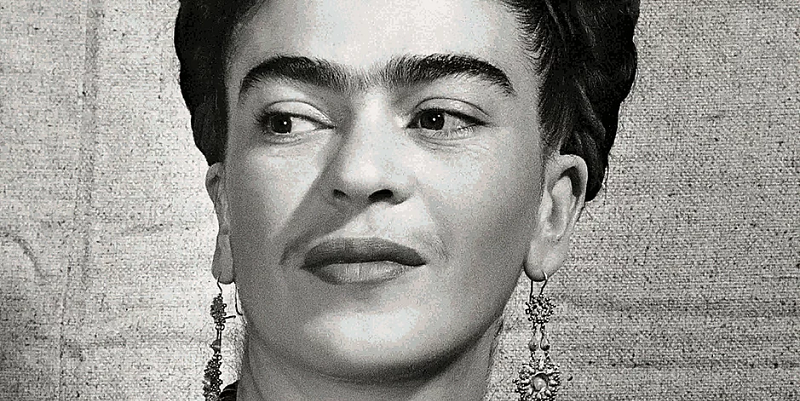

Frida Kahlo
Magdalena Carmen Frida Kahlo y Calderón, nasceu na vila de Coyoacán, no México, no dia 6 de julho de 1907. Filha de pai alemão e mãe espanhola desde pequena teve uma saúde debilitada. Com seis anos contraiu poliomielite que lhe deixou uma sequela no pé. Com 18 anos, sofreu um grave acidente de ônibus, que chocou-se com um trem. Tal acidente obrigou-a a usar coletes ortopédicos de diversos materiais, e ela chegou a pintar alguns deles (como o colete de gesso da tela intitulada A Coluna Partida'). Durante a sua longa convalescença, começou a pintar, usando a caixa de tintas de seu pai e um cavalete adaptado à cama.
Frida era uma talentosa pintora, falava abertamente sobre seu amor por outras mulheres e vivenciava a sua sexualidade com fervor. Ela tinha deficiências físicas e conviveu com dores crônicas a maior parte da vida, algo que explorava em sua pintura.
Ela usava seu meio para abordar tópicos que eram tabus, como a sexualidade feminina, dor e padrões de beleza feminina, primariamente através de autorretratos.
Frida gostava de se vestir com roupas masculinas desde a adolescência. Há fotos e pinturas em que Frida está trajada assim. Quer dizer que, além da bissexualidade, a pintora mexicana também provocava as regras de gênero
Há fotos e pinturas em que Frida está trajada assim. Quer dizer que, além da bissexualidade, a pintora mexicana também provocava as regras de gênero. Em 1954, a artista foi encontrada morta em sua casa, tendo em seu atestado médico o diagnóstico de embolia pulmonar, resultante de uma severa pneumonia. No entanto, alguns historiadores consideram a possibilidade de ela ter se suicidado com uma overdose de remédios, já que uma de suas últimas frases em seu diário pessoal declarava: “espero que minha partida seja feliz, e espero nunca mais regressar”